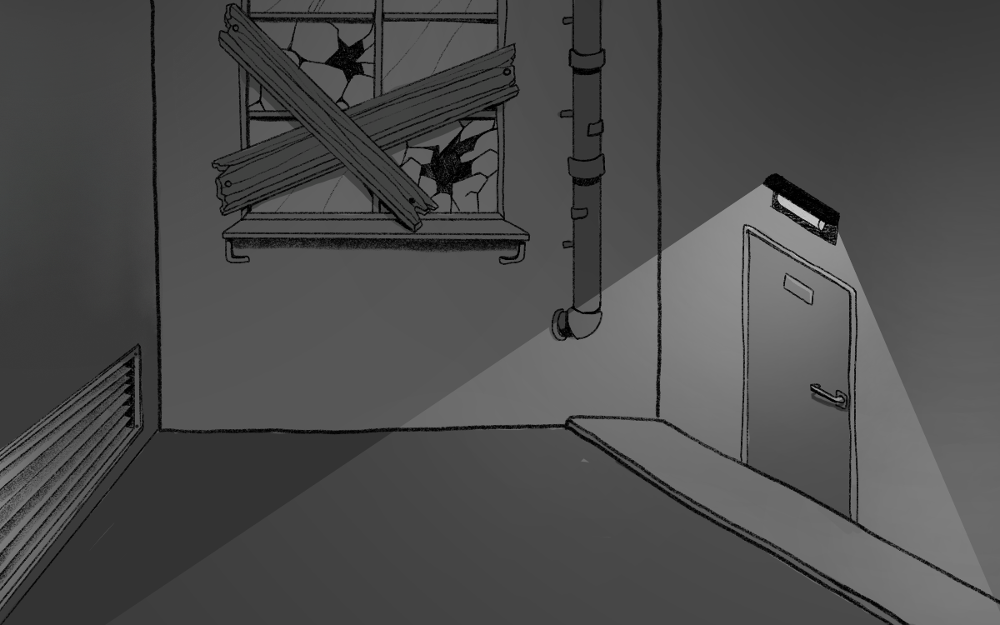
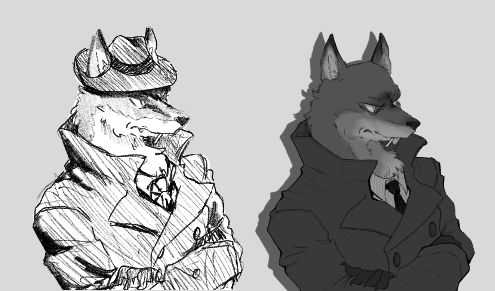

My capstone project is a narrative "visual novel" style game that takes place where censorship has gone further than necassary. You play as a fox detective named Fennek who must solve a murder mystery, but unfortunately all the important clues have been censored to protect innocent eyes.
Visual Design
.svg)


The first iteration of the background. It was done quickly and crudely as a placeholder while I figured out the CSS for the game background. Once I had a deeper understanding of how I would format the game, I looked up references of alleyways and deadends to give myself ideas.
This is what the final background ended up as. I decided I wanted more room to focus on where all the evidence would go so it wouldnt feel too crowded. I used basic shapes and icons on Figma to create a loose format on where I wanted each item to go, and used that as reference for where the ground should go for the background. It also helped with the placement of items later on.
A side by side of the first character sketch for Detective Fennek and his final look. Being the first character I worked on meant he would be setting the style and theme for the rest of the characters. I went into his design wanting a noir detective aesthetic which I looked up images to use as inspiration. After seeing the style, I looked up clothing that matched the images I liked as well as looked for images of foxes since I was unfamiliar with drawing animals.